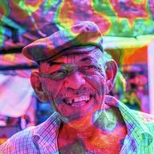

Iridescência

Cobre as partes opacas da camada com um brilho arco-íris em movimento, como óleo na água ou uma bolha de sabão.
Configurações
| Configuração | Tipo | Intervalo | Padrão |
|---|---|---|---|
| Escala | Número | 0.01 a 50 | 1 |
| Evolução | Número | -50 a 50 | 0 |
| Deslocamento de matiz | Número | -10 a 10 | 0 |
| Saturação | Número | 0% a 100% | 60% |
| Alfa | Número | 0% a 100% | 80% |
| Modo de mesclagem | Opção | Normal, Multiplicar, Tela, Sobrepor, Luz suave, Luz forte, Adicionar, Escurecer, Clarear, Diferença, Subexposição de cor, Superexposição de cor | Normal |
| Semente | Número | 0 a 5 | 0 |